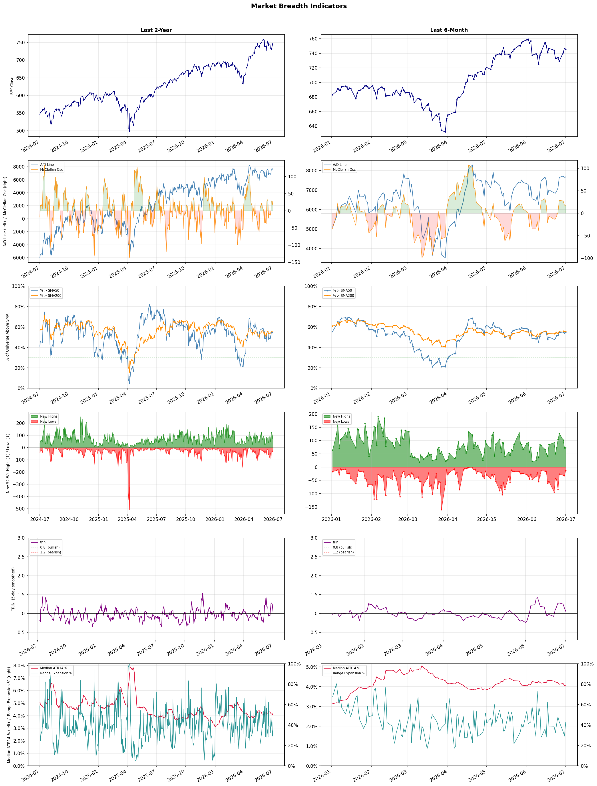

A daily market breadth and sector rotation report for active investors
| Item | Read |
|---|---|
| Regime | Selective Risk-On |
| Risk posture | Selective |
| Universe | 1,348 stocks tracked · 73 new 52-week highs · 30 active swing setups |
| Breadth | 54.9% of tracked stocks are above SMA50 — neutral range, new highs exceed new lows (73 vs 12) |
| Leadership | Healthcare Plans, Airlines, and Diagnostics & Research |
| Weakest groups | Uranium, Gold, and Chemicals |
Use this report to prioritize research and chart review; validate entries, stops, liquidity, earnings, and risk before acting.
| Item | Read |
|---|---|
| Primary read | Selective Risk-On regime with Selective risk posture. |
| Research queue | CLOV, OSCR, HUM, PGNY, ALHC |
| Leadership focus | Healthcare Plans, Airlines, and Diagnostics & Research |
| Caution list | Uranium, Gold, and Chemicals |
| Review prompt | Check extension risk, chart location, fundamentals, valuation, and earnings before using any research row. |
| Item | Read |
|---|---|
| Primary read | 1 active risk warnings; use screen output as watchlist input only. |
| Bullish screens | ALHC, HUM, AAL, NEO, MAS |
| Bearish screens | HTZ, BCE, T, TU |
| Alerts / levels | Automated trigger, stop, ATR, liquidity, reward/risk, and event-risk levels are pending future enrichment. |
| Review prompt | Open the linked chart, define trigger and invalidation, then check liquidity and event risk independently. |
Risk Posture: Selective — screen backdrop supports selective research in leading industries
Metric context: McClellan below -50 = elevated selling pressure; below -100 = washout territory. Range Expansion = share of stocks with daily range above their 20-day average. Signal Density = share of tracked names appearing in signal screens.
| Breadth Date | % > SMA50 | % > SMA200 | New Highs | New Lows | McClellan | Median Range | Avg Range | Median ATR14 | Range Expansion | Signal Density |
|---|---|---|---|---|---|---|---|---|---|---|
| 2026-07-01 | 54.9% | 55.6% | 73 | 12 | 17.6 | 3.7% | 4.3% | 4.1% | 42.7% | 8.9% |

Prior comparison date: June 30, 2026
| Metric | Prior | Current | Change |
|---|---|---|---|
| Regime | Selective Risk-On | Selective Risk-On | unchanged |
| Risk Posture | Selective | Selective | unchanged |
| % > SMA50 | 54.2% | 54.9% | +0.7 pts |
| % > SMA200 | 56.0% | 55.6% | -0.4 pts |
| New Highs | 72 | 73 | +1 |
| New Lows | 31 | 12 | +19 |
Top-10 industries entering: Health Information Services and Medical Care Facilities. Top-10 industries leaving: Electronic Components and REIT - Hotel & Motel. New multi-signal long setups: ALHC, BEN, BNS, CVBF, EBC, FWONK, LIN, OKTA. New multi-signal short setups: BCE, HTZ.
| Status | Tickers | Read |
|---|---|---|
| Added | ALHC, ALLO, BCE, BEN, BNS, CVBF, EBC, ENTG | New technical screen matches vs prior report. |
| Removed | ACMR, ALAB, ALGM, AMAT, ASML, CGNX, DFTX, EXTR | No longer present in today's technical screen matches. |
| Still Active | AAL, ACHC, BB, HUM, LFST, MAS, NEO, PANW | Appeared in both current and prior reports. |
| Promoted | none | Model Screen Score improved by at least 15 points. |
| Downgraded | none | Model Screen Score declined by at least 15 points. |
| Direction | Industry | ETF | Prior Rank | Current Rank | Days | Rank Change |
|---|---|---|---|---|---|---|
| Rose | Insurance - Property & Casualty | KIE | 90 | 5 | 28 | +85 |
| Rose | Building Products & Equipment | XHB | 92 | 8 | 42 | +84 |
| Rose | Household & Personal Products | XLP | 98 | 14 | 28 | +84 |
| Rose | Furnishings, Fixtures & Appliances | N/A | 98 | 24 | 42 | +74 |
| Rose | Restaurants | N/A | 94 | 23 | 28 | +71 |
Bull: The rising relative strength of the Property & Casualty insurance industry can be attributed to increasing digitalization and exposure growth, as highlighted in the TradingView article on the best P&C insurers to buy. Additionally, the positive sentiment surrounding key players like Globe Life and Aon suggests that Wall Street is bullish on the sector, further supported by strong recent earnings reports, which indicate robust financial health and growth potential within the industry. This combination of technological advancement and favorable market conditions positions the sector favorably compared to others.
Bear: While the rising relative strength of the Property & Casualty insurance industry may appear promising, it is crucial to consider the potential headwinds that could undermine this bullish outlook. Increased digitalization and exposure growth often come with higher operational costs and competition, which can erode margins for insurers. Moreover, the recent positive sentiment surrounding stocks like Globe Life and Aon may be overly optimistic, as the industry faces significant challenges such as rising claims costs due to climate change, regulatory pressures, and economic uncertainty that could dampen future growth prospects.
Verdict: The Property & Casualty insurance industry's rising strength is primarily driven by increasing digitalization and expanding market exposure, which enhance operational efficiency and customer engagement. However, investors should remain cautious of the key risk posed by rising claims costs linked to climate change and economic uncertainties, which could pressure profit margins and hinder future growth. It is advisable for stakeholders to closely monitor these potential headwinds while capitalizing on the sector's current momentum.
Sources: Yahoo Finance, Google News
Bull: The Building Products & Equipment sector is likely experiencing a rise in relative strength due to a rebound in the housing market, as indicated by the positive performance of iBuyer stocks like Opendoor and Offerpad, suggesting increased consumer confidence and activity in real estate transactions. Additionally, headlines pointing to potential recoveries for major homebuilders like Lennar and PulteGroup further support the notion of an improving housing landscape, which typically drives demand for building products and equipment, positioning the sector favorably compared to others.
Bear: While the recent uptick in iBuyer stocks and potential recoveries for major homebuilders may suggest a rebound in the housing market, this narrative overlooks significant headwinds such as persistently high mortgage rates, which continue to dampen affordability and constrain buyer demand. Additionally, any short-term gains in stock prices may be driven more by speculative trading rather than sustainable fundamentals, leaving the Building Products & Equipment sector vulnerable to a correction if economic conditions falter or if consumer confidence wanes.
Verdict: The Building Products & Equipment sector is likely rising due to a rebound in the housing market, bolstered by positive performance from iBuyer stocks and potential recoveries among major homebuilders, indicating increased consumer confidence in real estate transactions. However, the key risk lies in persistently high mortgage rates, which could undermine affordability and dampen buyer demand, potentially leading to a correction in the sector if economic conditions deteriorate. Investors should monitor mortgage rate trends and consumer sentiment closely to gauge the sustainability of this upward momentum.
Sources: Yahoo Finance, Google News
Bull: The Household & Personal Products sector is likely rising in relative strength due to its resilience amid mixed performance across consumer stocks, as highlighted in recent sector updates. Despite broader market volatility and uncertainty surrounding economic reports, the consistent demand for essential household products positions companies like Kimberly-Clark and Central Garden & Pet favorably, as consumers prioritize these necessities even in challenging economic climates. Additionally, the positive outlook from the 2026 Consumer Products Industry report by Deloitte suggests sustained growth potential, further bolstering investor confidence in this sector.
Bear: While the Household & Personal Products sector may appear resilient, the mixed performance among consumer stocks signals underlying weaknesses that could impact future growth. Rising inflation and potential interest rate hikes could lead consumers to tighten their budgets, prioritizing essential goods over premium household products, which may hurt margins for companies like Kimberly-Clark. Furthermore, the optimistic outlook from Deloitte may overlook potential disruptions in supply chains and increased competition, which could hinder profitability and growth in the sector.
Verdict: The Household & Personal Products sector is likely rising due to its inherent resilience in meeting consistent consumer demand for essential goods, even amid economic uncertainty, which provides a stable revenue stream for companies like Kimberly-Clark. However, the key risk lies in rising inflation and potential interest rate hikes, which could force consumers to shift their spending habits, adversely impacting margins and profitability for premium product lines. Investors should closely monitor economic indicators and competitive dynamics to assess potential vulnerabilities in this sector.
Sources: Yahoo Finance, Google News
Bull: The Furnishings, Fixtures & Appliances sector is experiencing rising relative strength primarily due to strong consumer demand and positive earnings reports, as evidenced by La-Z-Boy's impressive 13% surge following its robust Q4 earnings. Additionally, the broader consumer discretionary market is showing strong momentum, with companies like Traeger, Inc. leading the way, indicating a favorable economic environment that is boosting consumer spending on home furnishings and appliances. This trend is further supported by Groupe SEB's upcoming first-half results, which could signal continued strength in the consumer appliances segment.
Bear: While the recent earnings reports from companies like La-Z-Boy may suggest strong consumer demand, this could be misleading as it may reflect a temporary spike rather than a sustainable trend. Rising interest rates and inflationary pressures are likely to dampen consumer spending in the long term, especially in the discretionary segment, as households prioritize essential expenditures. Additionally, the upcoming results from Groupe SEB could reveal underlying weaknesses in consumer sentiment, potentially reversing the current momentum in the Furnishings, Fixtures & Appliances sector.
Verdict: The Furnishings, Fixtures & Appliances sector is likely experiencing a surge due to strong consumer demand and positive earnings from key players, indicating robust spending in the discretionary market. However, the key risk lies in rising interest rates and inflation, which may constrain consumer spending in the long term, particularly if upcoming results from companies like Groupe SEB reveal underlying weaknesses in consumer sentiment. Investors should monitor economic indicators closely to gauge the sustainability of this trend.
Sources: Google News
Bull: The rising relative strength of the restaurant industry can be attributed to several key factors, including the positive sentiment generated by social media, which has helped boost visibility and engagement for restaurant brands, as highlighted in the Restaurant Business article. Additionally, despite a recent pullback affecting individual stocks like CAVA Group, broader market analyses, such as those from Barron's and The Globe and Mail, indicate that major players like Chipotle and McDonald's continue to show strong growth prospects, suggesting resilience and long-term potential in the sector. This combination of social media influence and strong fundamentals among leading restaurants positions the industry favorably in the current market landscape.
Bear: While the rising relative strength of the restaurant industry may seem promising, it is essential to consider that social media buzz can be fleeting and may not translate into sustained revenue growth, particularly for brands like CAVA that are experiencing pullbacks. Additionally, the broader economic environment, including inflationary pressures and changing consumer spending habits, could undermine the perceived resilience of major players like Chipotle and McDonald's, potentially leading to disappointing earnings and a more challenging landscape for the sector overall.
Verdict: The restaurant industry's rising strength is fundamentally driven by enhanced visibility and engagement through social media, coupled with solid growth prospects from major players like Chipotle and McDonald's. However, a key risk lies in the potential for fleeting social media trends and the impact of inflationary pressures and shifting consumer spending habits, which could hinder sustained revenue growth and lead to disappointing earnings in the sector. Investors should monitor economic indicators and consumer behavior closely to assess the industry's resilience moving forward.
Sources: Google News
| Direction | Industry | ETF | Prior Rank | Current Rank | Days | Rank Change |
|---|---|---|---|---|---|---|
| Fell | Copper | COPX | 6 | 80 | 28 | -74 |
| Fell | Steel | SLX | 7 | 77 | 35 | -70 |
| Fell | Oil & Gas Integrated | XLE | 21 | 83 | 42 | -62 |
| Fell | Oil & Gas Equipment & Services | XES | 9 | 71 | 42 | -62 |
| Fell | Aerospace & Defense | ITA | 12 | 73 | 35 | -61 |
Bear: While the bull analyst highlights concerns over global manufacturing weakness and competition from other metals, it's essential to recognize that copper's recent rally may be driven by speculative trading rather than fundamental demand. Additionally, as global economic conditions tighten, the potential for reduced infrastructure spending and a slowdown in electric vehicle production could further depress copper prices, undermining the bullish narrative and leading to a more bearish outlook for the sector.
Bull: Copper's relative strength may be declining primarily due to concerns over global manufacturing weakness, as highlighted in the headline "If Global Manufacturing Weakens, Here’s What Happens to This Copper ETF." This sentiment is compounded by the competitive landscape where copper is being compared to other metals like gold and silver, particularly in the context of the AI boom, which could divert investment flows away from copper-focused assets. Additionally, while copper has seen significant gains recently, the overall market sentiment may be shifting towards sectors perceived as more resilient amid economic uncertainty, as indicated by the focus on grid resilience and energy sectors in the headlines.
Verdict: The recent decline in copper prices is primarily driven by concerns over weakening global manufacturing and potential reductions in infrastructure spending, which could diminish fundamental demand for the metal. Key risks include a slowdown in electric vehicle production and increased competition from other metals, which may divert investment away from copper. Investors should closely monitor economic indicators and manufacturing data to assess the sustainability of copper's demand amid these challenges.
Sources: Yahoo Finance, Google News
Bear: While the recent headlines highlight some positive developments for the steel industry, such as new 52-week highs and potential government support, these factors may not be sustainable in the face of underlying economic uncertainties and declining demand. The relative weakness in the steel sector, as indicated by the falling trend, suggests that investor confidence is waning, and the industry's reliance on cyclical economic growth makes it particularly vulnerable to downturns, especially as alternative materials gain traction and global supply chain disruptions continue to impact production and pricing stability.
Bull: The relative weakness in the steel industry, as indicated by the falling trend against other sectors, is likely driven by broader market concerns about economic growth and demand, particularly as highlighted by the recent headlines mentioning challenges faced by steel producers. Despite the positive news surrounding the VanEck Steel ETF (SLX) reaching new 52-week highs and potential gains from supportive government policies, such as those mentioned in the "Washington Just Handed Steelmakers a Huge Win" headline, the overall sentiment may be tempered by fluctuating steel prices and competition from alternative materials, as noted in the articles discussing steel performance and industry challenges.
Verdict: The steel industry's falling trend is primarily driven by broader economic concerns that are dampening demand, despite some recent positive developments like government support and the VanEck Steel ETF reaching new highs. Key risks include the potential for sustained economic downturns and increasing competition from alternative materials, which could further erode investor confidence and pricing stability in the sector. Investors should closely monitor economic indicators and industry dynamics to assess the viability of any bullish positions in steel.
Sources: Yahoo Finance, Google News
Bear: While the bull analyst attributes the decline in the Oil & Gas Integrated sector to broader market pressures, the persistent negative headlines surrounding energy stocks indicate deeper, sector-specific issues such as oversupply, regulatory challenges, and a potential shift toward renewable energy sources that could undermine long-term demand for fossil fuels. Furthermore, the mention of stocks poised to weather challenges does not negate the fact that the overall trend is downward, suggesting that even resilient companies may struggle to maintain performance in an increasingly competitive and environmentally conscious market.
Bull: The Oil & Gas Integrated sector is experiencing a decline in relative strength primarily due to broader market pressures and investor sentiment, as indicated by multiple headlines highlighting falling energy stock performance amid mixed U.S. equities and concerns surrounding Fed Chair Warsh's international debut. Additionally, the recent focus on integrated energy stocks suggests that while there are promising trends, the overall market environment is currently weighing on sector performance, leading to short-term volatility and uncertainty. However, the mention of stocks poised to weather industry challenges indicates underlying resilience and potential for recovery in the long term.
Verdict: The Oil & Gas Integrated sector's decline is primarily driven by a combination of broader market pressures and sector-specific challenges, including oversupply and increasing regulatory scrutiny amid a global shift toward renewable energy. The key risk highlighted by the bear case is that even resilient companies may struggle to sustain performance as demand for fossil fuels diminishes in an environmentally conscious market, suggesting investors should be cautious and consider diversifying into more sustainable energy options.
Sources: Yahoo Finance, Google News
Bear: While the bull analyst points to potential oil price surges as a positive for the Oil & Gas Equipment & Services sector, the reality is that the sector is facing significant headwinds from both regulatory pressures and a long-term shift towards renewable energy sources. The increasing focus on alternative investments, as seen in recent headlines, suggests that institutional investors are becoming wary of committing capital to traditional oil and gas, which could lead to sustained underperformance for ETFs like XES as the market transitions away from fossil fuels. Additionally, the falling relative-strength trend indicates that even short-term price fluctuations may not be enough to restore investor confidence in this sector.
Bull: The Oil & Gas Equipment & Services sector, represented by the SPDR S&P Oil & Gas Equipment & Services ETF (XES), is likely experiencing a decline in relative strength due to broader market concerns about oil price fluctuations and investor sentiment shifting towards alternative energy investments. Recent headlines highlight the potential for oil price surges, yet the focus on ETFs that benefit from these price movements without direct investment suggests a cautious approach, indicating that investors may be hesitant to commit to traditional oil and gas sectors amid ongoing volatility. Furthermore, the commentary from Fidelity Select Energy Portfolio hints at a reevaluation of energy investments, which could be contributing to the sector's relative underperformance.
Verdict: The Oil & Gas Equipment & Services sector is likely declining due to a combination of heightened regulatory pressures and a persistent shift towards renewable energy investments, which is causing institutional investors to reassess their commitments to traditional fossil fuel assets. The key risk highlighted by the bear case is that even potential short-term oil price surges may not be sufficient to counteract the long-term trend away from fossil fuels, leading to sustained underperformance in ETFs like XES. Investors should consider reallocating capital towards more resilient sectors that align with the ongoing energy transition.
Sources: Yahoo Finance, Google News
Bear: While the bull thesis highlights potential growth opportunities in autonomous weapons and European defense spending, it overlooks the significant headwinds facing the Aerospace & Defense sector, including rising costs, supply chain disruptions, and potential budget cuts in U.S. defense spending as political priorities shift. Furthermore, the sector's relative strength is falling, indicating that investor sentiment may be more focused on the uncertainties and risks associated with geopolitical tensions and the long-term viability of defense contracts, rather than the short-term gains touted by proponents of a super-cycle.
Bull: The Aerospace & Defense sector is experiencing a decline in relative strength primarily due to shifting investor focus towards the burgeoning opportunities in autonomous weapons and the significant surge in European defense spending, as highlighted in recent headlines. Additionally, the ongoing geopolitical tensions, particularly related to the Iran War, may be causing uncertainty that impacts investor sentiment, despite the potential for a new super-cycle in defense spending, as suggested by analysts. This combination of factors is leading investors to weigh the sector's growth prospects against the more immediate gains seen in other industries, such as airlines, which are currently capturing more attention.
Verdict: The Aerospace & Defense sector's decline can be attributed to a shift in investor focus towards more immediate growth opportunities in industries like airlines, coupled with rising costs and supply chain disruptions that are straining profitability. Key risks include potential budget cuts in U.S. defense spending and heightened geopolitical uncertainties, which could further erode investor confidence and dampen long-term growth prospects in the sector. Investors should remain cautious and closely monitor these developments while considering reallocating funds to sectors with more stable growth trajectories.
Sources: Yahoo Finance, Google News
| Industry | Rank | ETF | 7d | 14d | 28d | 42d | Chg 42d | Size | 20D | 60D | Composite | Active Setups |
|---|---|---|---|---|---|---|---|---|---|---|---|---|
| Healthcare Plans | 1 | IHF | 2 | 7 | 12 | 3 | +2 | 10 | 26.9% | 79.2% | 0.978 | 0 |
| Airlines | 2 | N/A | 1 | 5 | 24 | 47 | +45 | 8 | 21.1% | 47.0% | 0.945 | 0 |
| Diagnostics & Research | 3 | N/A | 3 | 13 | 19 | 51 | +48 | 16 | 22.0% | 40.4% | 0.921 | 0 |
| Biotechnology | 4 | XBI | 5 | 15 | 44 | 42 | +38 | 93 | 20.9% | 27.7% | 0.883 | 2 |
| Insurance - Property & Casualty | 5 | KIE | 15 | 47 | 90 | 43 | +38 | 8 | 17.8% | 24.0% | 0.879 | 1 |
| REIT - Office | 6 | XLRE | 6 | 9 | 13 | 19 | +13 | 8 | 11.2% | 53.3% | 0.878 | 0 |
| Semiconductor Equipment & Materials | 7 | SOXX | 7 | 3 | 11 | 11 | +4 | 17 | 9.6% | 65.4% | 0.877 | 1 |
| Building Products & Equipment | 8 | XHB | 9 | 25 | 51 | 92 | +84 | 8 | 13.5% | 22.2% | 0.853 | 0 |
| Medical Care Facilities | 9 | IHF | 11 | 42 | 36 | 28 | +19 | 10 | 19.0% | 27.9% | 0.850 | 0 |
| Health Information Services | 10 | N/A | 12 | 19 | 26 | 46 | +36 | 13 | 13.5% | 36.8% | 0.841 | 0 |
Rank columns (7d–42d) show the industry's rank that many trading days ago — lower is stronger. Chg 42d = rank change vs 42 trading days ago — positive means the industry moved up. 20D and 60D are the mean stock return within the industry over that period. Active Setups: count of today's swing-trade candidates from this industry appearing across all signal screens.
| Industry | Rank | ETF | 7d | 14d | 28d | 42d | Chg 42d | Size | 20D | 60D | Composite | Active Setups |
|---|---|---|---|---|---|---|---|---|---|---|---|---|
| Uranium | 88 | URA | 84 | 74 | 82 | 95 | +7 | 6 | -25.6% | -15.8% | 0.045 | 0 |
| Gold | 87 | GDX | 88 | 70 | 78 | 82 | -5 | 27 | -16.1% | -21.1% | 0.069 | 0 |
| Chemicals | 86 | N/A | 82 | 77 | 70 | 35 | -51 | 8 | -23.5% | -15.7% | 0.112 | 0 |
| Financial Data & Stock Exchanges | 85 | N/A | 87 | 88 | 96 | 69 | -16 | 7 | -6.1% | -10.9% | 0.139 | 0 |
| Oil & Gas E&P | 84 | XOP | 83 | 86 | 67 | 25 | -59 | 26 | -13.0% | -19.6% | 0.161 | 0 |
| Oil & Gas Integrated | 83 | XLE | 81 | 78 | 43 | 21 | -62 | 10 | -14.4% | -15.3% | 0.172 | 0 |
| Agricultural Inputs | 82 | N/A | 85 | 87 | 84 | 62 | -20 | 5 | -5.9% | -18.1% | 0.176 | 0 |
| Other Industrial Metals & Mining | 81 | N/A | 75 | 24 | 22 | 56 | -25 | 21 | -21.5% | 3.3% | 0.178 | 0 |
| Copper | 80 | COPX | 77 | 12 | 6 | 74 | -6 | 6 | -21.8% | -4.9% | 0.197 | 0 |
| Utilities - Independent Power Producers | 79 | XLU | 79 | 45 | 77 | 89 | +10 | 5 | -8.9% | -2.3% | 0.201 | 0 |
Rank columns (7d–42d) show the industry's rank that many trading days ago — lower is stronger. Chg 42d = rank change vs 42 trading days ago — positive means the industry moved up. 20D and 60D are the mean stock return within the industry over that period. Active Setups: count of today's swing-trade candidates from this industry appearing across all signal screens.
These are research candidates from top-ranked stocks, capped at five names per industry to avoid over-concentration. Returns shown (60D, 120D, 250D) are historical — they reflect where prices have already moved, not forward expectations. Extension Risk flags names that may require extra patience or a better entry point. They are not buy signals.
Chart: TV = TradingView chart (opens in browser); PDF = local chart file (if downloaded).
| Ticker | Name | Industry | Industry Rank | Market Cap | 60D Hist | 120D Hist | 250D Hist | Extension Risk | Research Reason | Chart |
|---|---|---|---|---|---|---|---|---|---|---|
| CLOV | Clover Health | Healthcare Plans | 1 | N/A | 188.2% | 115.6% | 108.1% | Very extended | Top-ranked in industry; very extended | TV |
| OSCR | Oscar Health | Healthcare Plans | 1 | N/A | 150.0% | 93.6% | 91.9% | Very extended | Top-ranked in industry; very extended | TV |
| HUM | Humana | Healthcare Plans | 1 | N/A | 124.2% | 48.8% | 67.9% | Very extended | Top-ranked in industry; very extended | TV |
| PGNY | Progyny | Healthcare Plans | 1 | N/A | 75.5% | 9.9% | 38.7% | Extended | Top-ranked in industry; extended | TV |
| ALHC | Alignment Healthcare | Healthcare Plans | 1 | N/A | 28.6% | 14.7% | 76.4% | Constructive | Top-ranked in industry | TV |
| ULCC | Frontier Group | Airlines | 2 | N/A | 116.5% | 63.4% | 92.8% | Very extended | Top-ranked in industry; very extended | TV |
| AAL | American Airlines | Airlines | 2 | N/A | 66.5% | 13.5% | 56.1% | Extended | Top-ranked in industry; extended | TV |
| UAL | United Airlines | Airlines | 2 | N/A | 48.5% | 15.9% | 66.8% | Constructive | Top-ranked in industry | TV |
| LUV | Southwest Airlines | Airlines | 2 | N/A | 32.2% | 18.4% | 48.5% | Constructive | Top-ranked in industry | TV |
| JBLU | JetBlue Airways | Airlines | 2 | N/A | 29.5% | 17.7% | 32.4% | Constructive | Top-ranked in industry | TV |
| TWST | Twist Bioscience | Diagnostics & Research | 3 | N/A | 99.8% | 179.8% | 171.4% | Extended | Top-ranked in industry; extended | TV |
| GH | Guardant Health | Diagnostics & Research | 3 | N/A | 90.5% | 55.3% | 240.3% | Extended | Top-ranked in industry; extended | TV |
| NEO | NeoGenomics | Diagnostics & Research | 3 | N/A | 86.7% | 18.2% | 102.3% | Extended | Top-ranked in industry; extended | TV |
| ADPT | Adaptive Biotechnologies | Diagnostics & Research | 3 | N/A | 58.9% | 33.7% | 94.9% | Extended | Top-ranked in industry; extended | TV |
| WGS | GeneDx Holdings | Diagnostics & Research | 3 | N/A | 7.7% | -47.5% | -20.1% | Constructive | Top-ranked in industry | TV |
| ABSI | Absci Corp | Biotechnology | 4 | N/A | 275.3% | 176.4% | 313.0% | Very extended | Top-ranked in industry; very extended | TV |
| SLS | Sellas Life Sciences | Biotechnology | 4 | N/A | 192.9% | 228.5% | 525.9% | Very extended | Top-ranked in industry; very extended | TV |
| QURE | uniQure NV | Biotechnology | 4 | N/A | 159.7% | 95.7% | 216.3% | Very extended | Top-ranked in industry; very extended | TV |
| DFTX | Definium Therapeutics | Biotechnology | 4 | N/A | 112.4% | 209.3% | 513.0% | Very extended | Top-ranked in industry; very extended | TV |
| ABVX | Abivax S.A. | Biotechnology | 4 | N/A | 11.0% | 4.8% | 1608.2% | Constructive | Top-ranked in industry | TV |
These are technical screen matches from existing signal files. They are not trade recommendations. Trigger, stop, ATR, liquidity, reward/risk, and event risk still require separate validation until those inputs are available.
Model Screen Score is weighted by signal count, industry rank, freshness, and setup type. It is not a probability of profit, expected return, or suitability rating. Industry cap: max 3 candidates per industry.
Signal glossary: Momentum Pullback = stock in an uptrend that has pulled back 10–30% and shows re-entry conditions. MA Compression = short- and long-term moving averages converging, often preceding a directional move. Three-Day Up/Down = three consecutive closes in the same direction. New 52Wk High/Low = price reached a new annual extreme.
Chart: TV = TradingView chart (opens in browser); PDF = local chart file (if downloaded).
| Ticker | Industry | Setups | Close | Industry Rank | Signal Count | Model Screen Score | Reason | Chart |
|---|---|---|---|---|---|---|---|---|
| ALHC | Healthcare Plans | New 52Wk High; Three-Day Up | 24.01 | 1 | 2 | 100 | Multi-signal; top industry breakout | TV |
| HUM | Healthcare Plans | New 52Wk High; Three-Day Up | 409.42 | 1 | 2 | 100 | Multi-signal; top industry breakout | TV |
| AAL | Airlines | New 52Wk High; Three-Day Up | 18.15 | 2 | 2 | 100 | Multi-signal; top industry breakout | TV |
| NEO | Diagnostics & Research | New 52Wk High; Three-Day Up | 14.97 | 3 | 2 | 100 | Multi-signal; top industry breakout | TV |
| MAS | Building Products & Equipment | New 52Wk High; Three-Day Up | 81.64 | 8 | 2 | 85 | Multi-signal; top industry breakout | TV |
| ACHC | Medical Care Facilities | New 52Wk High; Three-Day Up | 31.25 | 9 | 2 | 85 | Multi-signal; top industry breakout | TV |
| LFST | Medical Care Facilities | New 52Wk High; Three-Day Up | 11.43 | 9 | 2 | 85 | Multi-signal; top industry breakout | TV |
| TXG | Health Information Services | New 52Wk High; Three-Day Up | 39.05 | 10 | 2 | 85 | Multi-signal; top industry breakout | TV |
| BNS | Banks - Diversified | New 52Wk High; Three-Day Up | 87.35 | 13 | 2 | 85 | Multi-signal; new-high strength | TV |
| RY | Banks - Diversified | New 52Wk High; Three-Day Up | 208.31 | 13 | 2 | 85 | Multi-signal; new-high strength | TV |
| SAN | Banks - Diversified | New 52Wk High; Three-Day Up | 13.81 | 13 | 2 | 85 | Multi-signal; new-high strength | TV |
| CVBF | Banks - Regional | New 52Wk High; Three-Day Up | 23.11 | 20 | 2 | 77 | Multi-signal; new-high strength | TV |
| EBC | Banks - Regional | New 52Wk High; Three-Day Up | 22.63 | 20 | 2 | 77 | Multi-signal; new-high strength | TV |
| YUM | Restaurants | MA Compression; Three-Day Up | 161.59 | 23 | 2 | 72 | Multi-signal; compression setup | TV |
| BB | Software - Infrastructure | New 52Wk High; Three-Day Up | 12.81 | 27 | 2 | 70 | Multi-signal; new-high strength | TV |
| OKTA | Software - Infrastructure | New 52Wk High; Three-Day Up | 140.46 | 27 | 2 | 70 | Multi-signal; new-high strength | TV |
| PANW | Software - Infrastructure | New 52Wk High; Three-Day Up | 352.04 | 27 | 2 | 70 | Multi-signal; new-high strength | TV |
| LIN | Specialty Chemicals | New 52Wk High; Three-Day Up | 533.55 | 55 | 2 | 65 | Multi-signal; new-high strength | TV |
| FWONK | Entertainment | MA Compression; Three-Day Up | 98.38 | 58 | 2 | 60 | Multi-signal; compression setup | TV |
| BEN | Asset Management | New 52Wk High; Three-Day Up | 34.06 | 70 | 2 | 55 | Multi-signal; new-high strength | TV |
| ALLO | Biotechnology | Momentum Pullback | 2.11 | 4 | 1 | 58 | Single-signal; top industry pullback | TV |
| IBRX | Biotechnology | Momentum Pullback | 9.20 | 4 | 1 | 58 | Single-signal; top industry pullback | TV |
| IMMX | Biotechnology | Momentum Pullback | 9.83 | 4 | 1 | 58 | Single-signal; top industry pullback | TV |
| ENTG | Semiconductor Equipment & Materials | Momentum Pullback | 165.19 | 7 | 1 | 58 | Single-signal; top industry pullback | TV |
| VECO | Semiconductor Equipment & Materials | Momentum Pullback | 70.52 | 7 | 1 | 58 | Single-signal; top industry pullback | TV |
| WRB | Insurance - Property & Casualty | MA Compression | 70.66 | 5 | 1 | 53 | Single-signal; top industry setup | TV |
Bearish setups — stocks making new lows or showing persistent downside patterns. Validate carefully before acting.
| Ticker | Industry | Setups | Close | Industry Rank | Signal Count | Model Screen Score | Reason | Chart |
|---|---|---|---|---|---|---|---|---|
| HTZ | Rental & Leasing Services | New 52Wk Low; Three-Day Down | 2.20 | 40 | 2 | 40 | Multi-signal; new-low weakness | TV |
| BCE | Telecom Services | New 52Wk Low; Three-Day Down | 21.02 | 76 | 2 | 25 | Multi-signal; new-low weakness | TV |
| T | Telecom Services | New 52Wk Low; Three-Day Down | 20.48 | 76 | 2 | 25 | Multi-signal; new-low weakness | TV |
| TU | Telecom Services | New 52Wk Low; Three-Day Down | 10.52 | 76 | 2 | 25 | Multi-signal; new-low weakness | TV |
How To Use This Report
| Use | Purpose |
|---|---|
| Market map | Start with breadth, regime, risk warnings, and what changed since the prior report. |
| Industry scan | Use leading, deteriorating, rising, and declining industries to focus research. |
| Research queue | Treat long-term candidates as names for deeper fundamental, valuation, and chart review. |
| Technical review | Treat bullish and bearish screen matches as watchlist inputs that require independent trigger, stop, liquidity, and event-risk checks. |
| Source follow-up | Use chart links and source files to verify raw inputs before relying on any row. |
What This Report Is Not
| Not | Meaning |
|---|---|
| Investment advice | The report does not evaluate personal objectives, risk tolerance, tax situation, account type, or suitability. |
| Buy/sell recommendation | Named tickers are research candidates or screen matches, not recommendations to transact. |
| Price target | The report does not provide fair value estimates, targets, or expected returns. |
| Trade plan | Trigger, stop, sizing, reward/risk, liquidity, and event-risk review remain separate user work. |
| Performance claim | Model Screen Score is not validated historical performance or a forecast of future results. |
| Item | Note |
|---|---|
| Version | Daily Report Methodology v1 |
| Model Screen Score | Screen-fit rank based on signal count, industry rank, freshness, and setup type. |
| Not predictive proof | The score is not expected return, probability of profit, historical validation, or suitability analysis. |
| Industry ranks | Composite industry ranks use existing daily ranking outputs and historical rank columns when available. |
| Research candidates | Long-term rows are research candidates from ranked stocks and leading industries, with historical returns labeled as historical only. |
| Technical matches | Bullish and bearish rows are screen matches requiring independent chart, trigger, stop, liquidity, and event-risk review. |
| Source | Status | Rows | Path |
|---|---|---|---|
| Market breadth | present | 1253 | breadth_20260701.csv |
| Industry composite rankings | present | 88 | all_industry_composite_20260701.csv |
| Top ranked stocks | present | 191 | top_ranked_composite_20260701.csv |
| All ranked stocks | present | 1348 | all_stocks_composite_sorted_20260701.csv |
| Top momentum pullbacks | present | 1495 | top_momentum_pullbacks_20260701.csv |
| MA compression | present | 1495 | ma_compression_stocks_20260701.csv |
| Three-day up/down | present | 158 | three_day_up_down_stocks_20260701.csv |
| New 52-week members | present | 85 | breadth_new_52wk_members_20260701.csv |
This report is generated from automated technical screens and is for informational and research purposes only. It is not investment advice, a solicitation, or a recommendation to buy or sell any security. Past performance is not indicative of future results. You are solely responsible for your own investment decisions. Consult a licensed financial advisor before acting on any information herein.